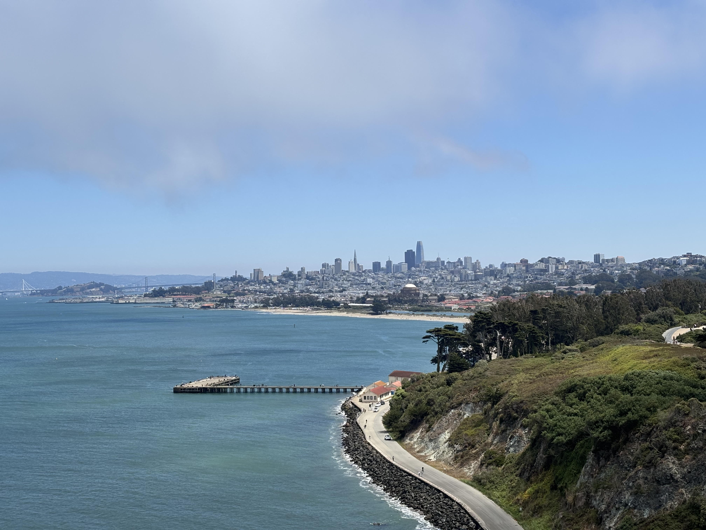

liam
Licence 2 lettres modernes

Mon CV des trois dernières années :
année universitaire
Statut
2025-2026
Cette année
2024-2025
L'année d'avant
2023-2024
L'année d'encore avant
Voici les cinq derniers livres que j'ai lu :
Titre
,
romain gary, la promesse de l'aube
Titre
,
albert camus, premier homme
Titre
,
Maupassant, bel ami
Titre
,
Moliere, l'ecole des femmes
Titre
Marcel Pagnol, la gloire demon pere